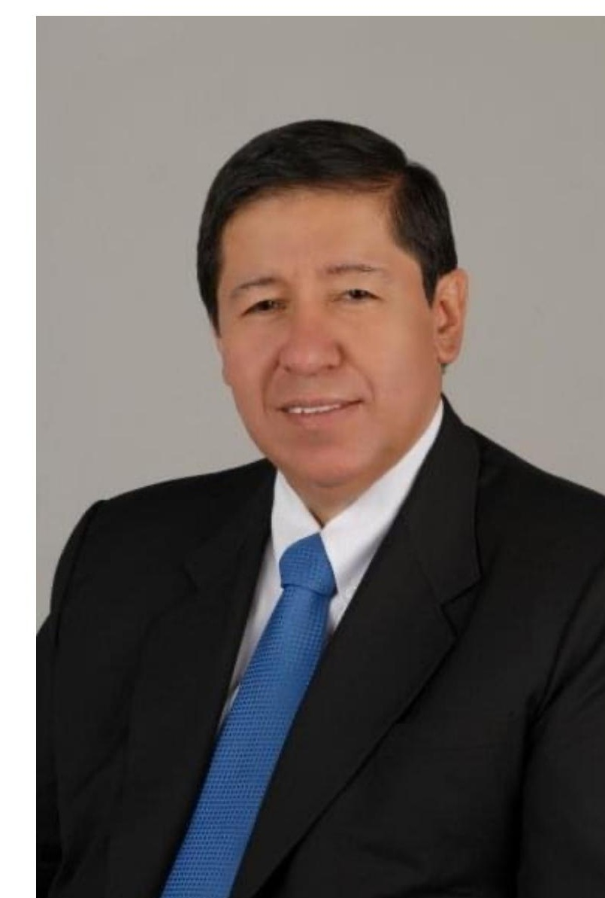

2025
Ganador — Convocatoria de Fantasía
ITA Editorial
Reconocimiento y Excelencia otorgado en la convocatoria literaria de abril de 2025 por Las voces del silencio.
La obra fue destacada por su originalidad, profundidad y capacidad de conmover.

Sobre el autor
Escritor colombiano · Seudónimo FABROS
Abogado, consejero de familia, conferencista y escritor cuya trayectoria ha estado profundamente vinculada a las relaciones humanas y la familia.
A través de su experiencia profesional y de la literatura, Douglas Fabián Saavedra ha encontrado distintas maneras de acercarse a las experiencias, conflictos y reflexiones que forman parte de la vida humana.
Trayectoria
Douglas Fabián Saavedra Lesmes nació en Bogotá el 20 de enero de 1960. Abogado de profesión, ha dedicado gran parte de su vida profesional al derecho de familia.
Su trabajo lo ha llevado a acompañar de cerca diferentes realidades familiares. También ha servido como consejero de familia y ha impartido conferencias motivacionales dirigidas tanto a grupos familiares como a jóvenes solteros.
Esa cercanía con las relaciones humanas constituye también parte del contexto desde el cual desarrolla su faceta como escritor.
Familia
Casado desde hace 45 años, Douglas es padre de dos hijos y abuelo de seis nietos.
La familia ha ocupado un lugar importante tanto en su vida personal como en su trayectoria profesional, especialmente a través de su trabajo en el derecho de familia y como consejero.
Literatura
Bajo el seudónimo FABROS, Douglas ha desarrollado su obra literaria explorando diferentes historias, reflexiones y experiencias humanas.
Ha publicado obras como Las voces del silencio y ha participado en diversas antologías con relatos de su autoría.
Explorar sus obras →Reconocimientos
Su trabajo literario ha sido reconocido por ITA Editorial en distintas convocatorias literarias.
2025
ITA Editorial
Reconocimiento y Excelencia otorgado en la convocatoria literaria de abril de 2025 por Las voces del silencio.
La obra fue destacada por su originalidad, profundidad y capacidad de conmover.
2024
ITA Editorial
Reconocimiento como ganador de la convocatoria literaria libre de noviembre de 2024.
Obra literaria
Su trayectoria literaria incluye libros de autoría propia y participaciones en publicaciones colectivas, con obras que abordan diferentes dimensiones de la experiencia humana.
Entre ellas se encuentran Las voces del silencio y Lo que debo saber antes de comprometerme o divorciarme, además de relatos publicados en las antologías Blanco secreto, Hasta que arda el silencio e Inventaron mi muerte y funcionó.
Ver todas las obrasContacto
Para consultas sobre sus libros, entrevistas, presentaciones o conferencias.
Contactar al autor